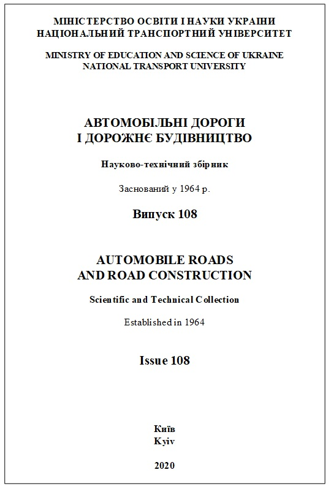
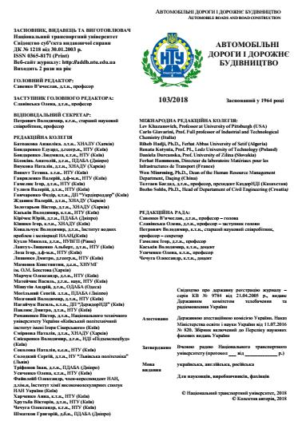

ISSN 0365-8171 (Print), URL: http://addb.ntu.edu.ua
Founded in 1964
Founder: National transport university
Certificate of state registration of the Journal - series КV № 9784 dated April 21, 2005, issued by the State Committee for Television and Radio Broadcasting of Ukraine.
Language of edition: Ukrainian, Russian, English
Thematic focus: Technical Sciences (Engineering)


The aim of the publication of The Scientific and Technical Journal "Automobile Roads and Road Construction" - the coverage of the results of theoretical and experimental research in the fields of exploration, designing roads and transitions through watercourses; road building materials and products; construction and maintenance of roads and airfields; economy of road construction production, technical expertise and property valuation; construction mechanics and system analysis; transport constructions; transport technologies and traffic safety; road construction machinery and production base of construction; ecology and environment protection, etc.
The Journal is for scientists, employees of research institutes, design and construction organizations, as well as university lecturers and students.
Printed copies are distributed among: state and leading libraries of Ukraine, leading educational, scientific, research and design institutions of road transport; enterprises for the construction, reconstruction, repair and maintenance of highways and airfields; institutions in which must send the publications with published main results of the dissertation work (the order of the Ministry of Education and Science of Ukraine dated July 11, 2016 No. 820 is included in the List of scientific professional editions of Ukraine).
The Scientific and Technical Journal "Automobile Roads and Road Construction" is published according to the decision of the Academic council of the National transport university.